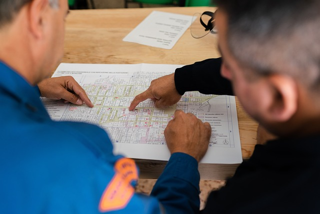
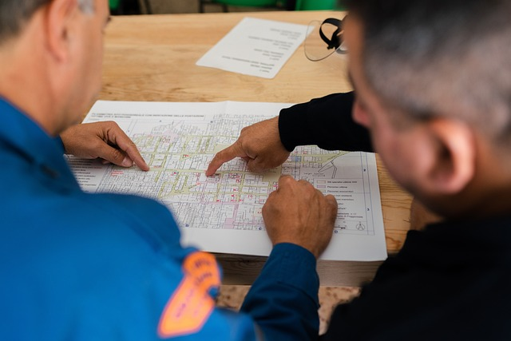

Hey,
Third year computer science student at Simon Fraser University
Throughout my academic journey, I have taken many programming and mathematical courses. Due to this, I have deep understanding of many Programming languages. These Include C++, Java, HTML, CSS, and more. My experience spans various tech-related positions where I have develop excellent collaborative and leadership skills. In my free time, I enjoy watching sports and listening to music. I also enjoy hanging out in nature and going on long hikes. I have spent time building many projects. One of my favorites is a hangman game. Although most people find it difficult, I enjoyed making that game. Whether I’m coding or spending time outdoors, I’m always looking to learn and grow, blending my love for technology with my other interests. If you would like to contact me please click on the icons below, which will direct you to ways to contact me
 


Over five years, I have developed proficiency in various programming languages. Although I do not have technical experience in the field, I have participated in activities showcasing my programming skills. These include activities that require programming, theoretical, problem-solving, and time-management skills. One activity was the 2024 SFU hackathon. These events have helped me progress and learn as a programmer. Additionally, I have achieved a 4.11 GPA over three calculus courses. Thus, I actively peer tutor students struggling with math or programming courses. Click on the book icon to learn more about SFU hackathon.
I have built many projects over time. They vary in difficulty. Most of my projects are made from CSS, HTML, and Javascript. However, I have built projects using Python and other programming languages. Some projects I have built are a weather website and a hangman game. In my free time, I love to make projects. In the future, I look forward to collaborating with others to create new projects. Below, I have linked my projects. The game icon leads to my hangman game. The sun icon leads to my weather website. Please ensure to use a laptop while viewing them.
While learning to program, I developed a passion for game development. In the future I aspire to become a software developer. In my first programming class, I learned the basics of Java. I got to create my first video game. It was a snake game. From this, experience I learned how much I enjoy programming. However, I also enjoy learning about cyber crime. I would also like to persue a career in cyber security. I am eager to apply my skills and continue learning in a dynamic tech environment. Whether it is a collaborative project, internship opportunity, or full-time role, I am ready to contribute and grow.